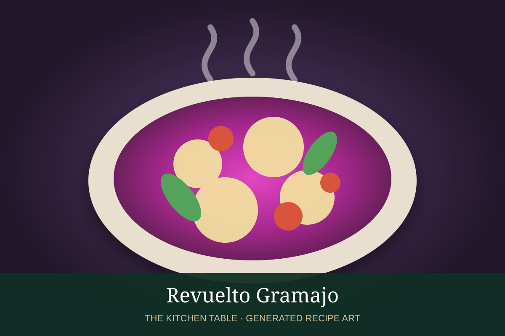

← Back to all recipes
MEAT · URUGUAYAN
Revuelto Gramajo
A Montevideo classic of crisp shoestring potatoes, ham, and softly scrambled eggs.
30 minServes 4

Photo: Montevideo Portal
Ingredients
- 1 1/2 lb russet potatoes
- Neutral oil, for frying
- 6 oz cooked ham, cut into thin strips
- 6 large eggs
- 2 tbsp butter or olive oil
- 2 tbsp chopped parsley
- Salt and black pepper
- 1 small onion, thinly sliced, optional
Preparation
- Cut the potatoes into very thin shoestrings, rinse well, and dry thoroughly.
- Fry the potatoes in 350°F oil in batches until crisp and golden. Drain and season with salt.
- In a large skillet, cook the ham and optional onion in butter or olive oil until lightly browned.
- Beat the eggs lightly, add them to the skillet, and scramble gently until just set and still moist.
- Fold in most of the crisp potatoes, keeping some for garnish.
- Season with pepper, top with parsley and the reserved potatoes, and serve immediately.